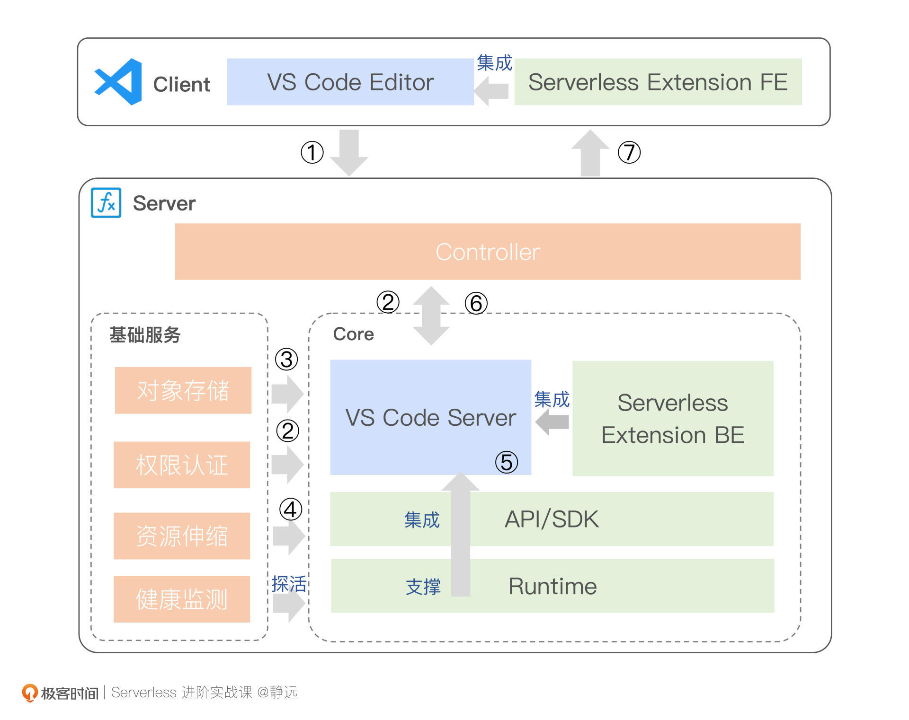

- 00 开篇词 Serverless是降本增效浪潮下的必然选择.md.html
- 00 思维构建 如何在新赛道下进阶Serverless能力？.md.html
- 01 生命周期：函数计算的基本流程是如何执行的？.md.html
- 02 触发器：如何构建事件源与函数计算的纽带？.md.html
- 03 高级属性：应对生产级别的应用，你需要掌握哪些技能？.md.html
- 04 冷启动：如何加快函数的第一次调用过程？.md.html
- 05 扩缩容：如何应对流量的波峰波谷？.md.html
- 06 流量转发：函数在不同情形下是如何执行的？.md.html
- 07 运行时（上）：不同语言形态下的函数在容器中是如何执行的？.md.html
- 08 运行时（下）：不同语言形态下的函数在容器中是如何执行的？.md.html
- 09 小试牛刀（一）：如何利用函数之间的调用解决业务问题？.md.html
- 10 小试牛刀（二）：如何突破VPC网络的速度限制？.md.html
- 11 WebIDE：如何让函数远离繁琐的本地开发模式？.md.html
- 12 编排：如何协调多任务的运行？.md.html
- 13 可观测（上）： 如何构建多维度视角下的Serverless监测体系？.md.html
- 14 可观测（下）： 如何构建多维度视角下的Serverless监测体系？.md.html
- 15 选型：不同阶段的数据应如何存储？.md.html
- 16 动手体验（一）：如何实现业务高效率地开发上线？.md.html
- 17 动手体验（二）：如何在云函数场景下实现一个有状态的服务？.md.html
- 18 实战指南：Serverless沙场老兵的一线使用经验.md.html
- 19 实战进阶（一）：Serverless “连接器” 的能力到底有多大？.md.html
- 20 实战进阶（二）：如何基于智能音箱开发一个BOT技能？.md.html
- 21 实战进阶（三）：传统的服务如何迁移到Serverless平台？.md.html
- 22 私有云：赛马时代的Serverless核心引擎谁能胜出？.md.html
- 23 实战进阶（四）：如何从0到1进阶一个开源引擎？.md.html
- 24 实战进阶（五）：如何从Serverless引擎蜕变成一个Serverless平台？.md.html
- 结束语 在实战中把握事物本质，不断革新.md.html
- 捐赠
11 WebIDE：如何让函数远离繁琐的本地开发模式？
你好，我是静远。
在开始今天的主题之前，我想跟你先聊一下我的客户在WebIDE这块的诉求。我在金融领域客户的提问中挑选了两个比较典型的问题：
- 银行要求生产环境不带自己的电脑，请问我如何操作我们的代码？
- 编辑框有点小，我用的是Python，是否能提供在线调试的能力？
你会发现，不管是工作硬性的要求还是自身对开发效率的追求，他们最终的目的，都是希望有一个能够随时随地、打开即用的代码编辑器——WebIDE。
我想，WebIDE这个概念你一定不陌生，但如何让WebIDE更好地用于函数计算的开发呢？我们又需要注意哪些细节呢？这里面有哪些不一样的技术点呢？
今天，我就来跟你聊一聊函数计算中WebIDE是如何工作的。希望通过这节课程，让你在了解VS Code Server原理的基础上，在插件机制、环境的依赖、弹性伸缩等几个方面都对函数计算形态的WebIDE有一个比较清晰的认识。
WebIDE的优势是什么？
首先，我们来体验一下云厂商的WebIDE，直观感受一下它的优势。
我们可以以阿里云函数计算FC为例，创建一个Python3语言运行时的函数。点击控制台页面的“函数代码”，就可以加载出来在线编辑的工作空间。
我们可以看到，这和我们本地的VS Code IDE几乎没有太大差别，左上角是我们熟悉的“文件”、“资源管理器”、“查找”等菜单按钮。而且，在线编写代码的体验和本地IDE也几乎是一样的，包括代码提示功能等都有。当你完成代码编写之后，还可以点击测试按钮，直接测试编写的函数。确认无误后，点击部署函数，测试好的代码也可以直接部署在云端。
这种方式的好处是，当我们想要细微调整函数的时候，无需下载代码到本地，可以直接在线完成编辑、测试、部署这一系列的动作。
现在，我想你应该对WebIDE的优势有一个直观的感受了：可快速地编辑、调试、运行、部署云端代码。它的另一个优势就是在金融银行领域，出于安全的考虑，有的环境往往是不能带自己的电脑和本地IDE的，只能通过WebIDE的方式来操作。
针对函数计算的WebIDE，各大云厂商都有不同程度的实现，虽然不管是在公有云还是在私有云上，实现方面可能有一定的差异，但背后的实现思想和机制是通用的。接下来，就让我们深入了解它的整体架构。
整体架构
为了让你更直观地理解在线的函数计算IDE，我在架构图中用不同的颜色做了标识。我分别来做一下说明。

- 蓝色部分：是WebIDE客户端的核心，我们选取了知名的VS Code Server来作为核心底座，它在很大程度上解决了 Client 端的问题，其自身基于 VS Code 二次开发，让VS Code在任何地方都可以通过浏览器访问和操作；
- 绿色部分：是将WebIDE与函数计算结合起来的核心，主要包括函数计算业务形态下的功能插件、工具、SDK以及运行时环境能力；
- 橘色部分：是Serverless形态下的必备支撑服务，承担代码的存储、安全管控和针对用户操作请求时的资源调度和伸缩事项，主要包括对象存储、权限认证、资源伸缩、健康监测能力。
在图中，我也用序号标注了WebIDE在函数计算平台的简要执行过程，接下来，我以一个函数的Deploy请求为例，帮助你从整体上快速了解每次请求涉及的全貌。
第1-2步，用户会在VS Code的前端页面向后端发出函数在线编辑的请求，假设为“XXX/ deployFunction”，那么服务端，也就是函数计算的控制层Controller在接收到请求后，就会验证权限，再转给VS Code Server容器实例。
第3-4步，VS Code Server容器就会获取用户代码，再加载函数计算的资源调度系统，也会根据目前容器池Container Pool的资源现状，动态扩缩容WebIDE Pod资源。
第5-7步，Server端根据用户的请求，会调用插件后端功能Serverless Extension BE，基于此时语言的环境，执行Deploy操作，并将执行结果返回给Client端。
这里需要额外说明三点：
第一，我们可以将Serverless Extension插件提前集成在VS Code Server的镜像里面；
第二，Runtime依据原来函数计算执行的架构来部署即可，你可以将各语言运行时打包成一个镜像，然后以动态挂载的方式加载每个语言，也可以集成在WebIDE的大镜像里面，不过这样会比较笨重；
第三，健康监测主要用于监听VS Code Server的状态。虽然网页版的服务都在服务端运行，但界面Client和后台Server是有心跳关联的，这个健康监测的作用，就是心跳监测。它会按照一定的逻辑来判断页面是否不再使用，以便通知资源调度服务，释放后端的容器实例。
基于基础架构和流程的展示，我们应该已经能够理解，函数计算的WebIDE的主要功能就在于，基于一个可视化的在线编辑软件的基础，增加了Serverless函数计算的插件功能，通过集成运行时环境依赖和弹性伸缩的能力，提供用户在线开发、调试、部署和运行函数的能力。
接下来，我们就沿着这个思路，对可视化的在线编辑软件VS Code Server、Serverless Extension插件功能、环境依赖和弹性伸缩的能力，依次展开说明，看看它们有什么需要注意的技术要点。
VS Code Server
我在开头提到过，本次讨论基于VS Code Server来展开，主要是因为VS Code的背景公司是微软，使用人群基数庞大。微软将VS Code进行了开源，而Code Server又对VS Code进行了二次封装，使其可以在任何机器上部署并且通过浏览器来访问。
我们还是来体验一下，这样更直观一点。
首先，你需要提前准备一个2核4G的机器（区别于code-server在github上的最低要求2核1G），确保执行所需的空间资源，并且确保有docker环境。
接下来，你可以下载code-server镜像到本地，并启动为容器。
# 拉取vscode server镜像到本地
$ docker pull jmcdice/vscode-server
# 启动一个docker
# -d是在后台运行容器
# -p将本地的端口（9000）映射到容器的端口（8080）
# --restart=always是在重启容器时，能重新启动参数
# --name指定启动容器的名字
$ docker run -d -p 9000:8080 --restart=always --name=myVscodeServer jmcdice/vscode-server
启动动完成之后，我们要使用docker ps命令，查看容器是否已经启动。最后，我们在浏览器中输入127.0.0.1:9000，就可以使用在线VS Code了，这个流程操作下来是非常方便、快捷的。
需要注意的是，我们这里只是以本地docker的方式启动了VS Code，如果我们想对外使用，只需要申请部署云服务器，并对外暴露URL就可以了。

有了本地的体验，我们放到函数计算平台，无非就是新增一个镜像并启动为容器的过程。我们的重点，是集成函数服务的能力，这就是我们下面要讨论的Serverless Extension插件功能了。
Serverless Extension
各大云厂商基于WebIDE，通过开发插件Extension的方式集成了函数平台的常用功能。
如百度智能云函数计算的Baidu Serverless VS Code 插件、腾讯云函数的Tencent Serverless Toolkit for VS Code插件、阿里云函数计算的Aliyun Serverless VSCode Extension插件等等。从产品形态上来看，大体比较类似，你选择其中一个来体验就行。
但要注意的是，各云厂商的VS Code插件底层实现都是集成了自家的命令行工具和SDK的，如百度智能云集成了BSAM CLI、腾讯云集成了Serverless Framework 语法、阿里云的插件结合了函数计算命令行工具Funcraft和函数计算SDK的功能。
那么，他们都是怎么实现的呢？虽然各家集成的工具和SDK多多少少带有自家的特性，但设计的通用原则是不变的。接下来，我就以这种通用的设计法则和思路，来阐述如何构建一个Serverless VS Code Extension。
首先，我们可以发现，各家的插件都是放在了微软Visual Studio Marketplace之上，你可以从这里任意点击一个插件进去，可以看到相应的源代码、手册等维护信息。
其次，该插件只是一个端的体现，还是得由函数计算平台的SDK和CLI命令工具来实现。例如函数的上传、下载功能底层，都是调用SDK中函数的接口实现，而函数的部署、依赖安装、调试、执行，则一般是在CLI中实现的。
总结起来就是两部分，一部分是端的UI层逻辑的体现，集成在VS Code里面，一部分是工具CLI和SDK的集成，用于真正执行相关的命令，在服务端容器中运行。如下图所示：
我们可以将CLI、SDK、Serverless Extension与VS Code Server打包在一个大镜像里面，在请求的时候，通过下载镜像，在启动后为容器提供服务。
环境依赖
接下来，我们需要了解比较关键的一步——如何让函数“跑”起来。这就涉及到环境依赖了。
根据编程语言的不同特性，通常函数计算平台需要针对各个语言做不同的Runtime，为了区别于正式生产环境下的Runtime，我这边采用dev-runtime命名。
它们主要的不同就在于，dev-runtime需要根据不同的指令，来进行不同的操作，比如根据UI层发送的部署指令，进行deploy操作。而我们之前第一模块中提到的Runtime，是运行态直接挂载的。通常，函数计算平台也是会对Runtime和dev-runtime进行区分，分开管理的。
这里，我们具体看下dev-runtime的执行流程。我以Python3的调试为例，简单跟你聊一下这个过程。
就Python3而言，如果需要支持调试，我们需要提前在Docker镜像中指定安装debugpy。有的操作系统可能还需要安装GCC。
我们通常可以通过一个脚本来接收各种指令，并调起各个依赖工具。那么，针对Python3语言，如果接收到WebIDE安装扩展依赖的指令，就可以通过pip3来install了。
# -r 安装需求文件里的依赖包
# -t 安装目标位置
# -i 指定镜像源，本案例指定清华源，具体你可以自定义
# -I 如果已经安装依赖，忽略
/XXX/bin/pip3 install -I -r /XXX/requirements.txt -t /XXX/site-packages -i https://pypi.tuna.tsinghua.edu.cn/simple
类似的，如果需要支持调试和执行，通过Python3和debugpy相应的命令来执行即可。而其他语言的调试实现，依赖于各语言的调试方式，比如Node.js会使用node-inspect调试工具。
需要补充说明的是，虽然我在文章开头指出大部分云厂商在其公有云上不支持Java的在线WebIDE的能力。但其实，Java也是可以支持网页版能力的，我们只需要在Java调试的启动脚本中，添加相应的命令启动调试即可。
弹性伸缩
到这里，针对函数计算的WebIDE已经讲解得差不多了。但如果只是这样，它还不能被称为“Serverless”的，我们需要再给它加上一层“可弹”的特性。
这其实和我们前面涉及到的扩缩容有些类似，我先给你一个思路，之后你也可以自己完整走一遍Serverless下的WebIDE流程。
关于这一层“可弹”的特性，你可以通过KEDA、Prometheus、HPA、metrics来支撑WebIDE在Kubernetes环境下的动态扩缩容。为什么需要引入KEDA？如果结合扩缩容 那一节课，你应该可以很快回答出来，因为KEDA可以支持0-1之间的切换。
最后，还剩一个比较重要的问题，就是我在基础架构图中画的“健康监测”。为什么要有这个功能呢？
我们可以这么想，前端页面和提供服务的VS Code Server在第一次建立链接后，是需要有页面的触发，才会有下一步的执行动作的。那么，如果用户没有触发，该怎么办？是释放掉容器实例还是持续存在？存在多久合适呢？
比较合理的设计是在VS Code Server中存在两个进程，Server进程负责和前端页面的Edit请求交互，而Status管理进程负责状态管理上报。其中，VS Code Server和前端通信的协议一般使用WebSocket协议。
依据这样的设计思路，当WebIDE前端和Server超过一定时间没有响应时，可能就是网络原因了。此时不会立马回收VS Code Server容器实例，会重试连接一定次数。当连接成功时，就会继续使用该容器实例。如果重试仍然连接失败，就说明该容器实例已经不再被使用了，会将该实例标记为不可用状态，定期执行清除任务，将不可用状态的容器实例回收。
通过这样的状态监测管理，使得我们函数计算平台的WebIDE也是“可弹”的。
小结
最后，我来小结一下我们今天的内容。这节课，我从函数计算WebIDE的整体架构出发，分别介绍了它的核心四要点：VS Code Server、Serverless Extension、环境依赖、弹性伸缩。
在课程的开头，我们通过云厂商已经发布的WebIDE体验了一次，清晰直观地感受到了我们今天内容的价值：使用Web IDE，不仅能对用户的代码进行快速的编辑和修改，还能够高效地加载代码所需的外部依赖，从而大大降低开发人员重新部署的次数以及时间。
再来，通过整体架构的介绍，相信你已经从概貌上了解了设计一个Serverless形态的WebIDE需要考虑的四大要点。我们一个一个来说。
首先，VS Code Server的讲解，主要想向你传递两件事情：第一，code-server是对VS Code的二次封装，让我们平时在本机使用的VS Code可以无处不在的访问；第二，函数计算平台也是站在巨人的肩膀上，进一步构建属于Serverless下的WebIDE的。这对于我们平时在设计架构和工作中也有一定的启发：没必要什么事情都自己重复去造轮子。
其次，Serverless Extension和环境依赖是本节课的“灵魂”，没有了这两个功能，就不能称之为函数计算形态下的WebIDE。它们主要是基于函数计算的工具CLI和SDK，以及调试需要下不同运行时的封装。
最后，为了符合Serverless的“可弹”特性，我也从扩缩容的角度，介绍了VS Code Server在容器中的两种服务的进程，希望你能清晰地了解网页版“端和服务”的联动关系。
思考题
好了，这节课到这里也就结束了，最后我给你留了一个思考题。
如果让你来在现有云厂商平台上新增支持Java的在线调试功能，你打算如何实现？
欢迎在留言区写下你的思考和答案，我们一起交流讨论。感谢你阅读，也欢迎你把这节课分享给更多的朋友一起交流学习。
延伸阅读
你可以通过VS Code插件官网搜索到对应的插件库，更详细地了解extension是如何实现的。
© 2019 - 2023 Liangliang Lee. Powered by gin and hexo-theme-book.